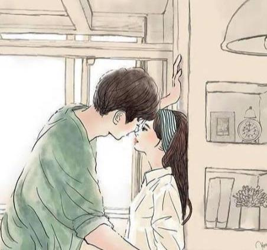

女人被男人“撩”时，心里的想法多半是这样的，你体验过吗？
当一个男人看上一个女人后，一般都会主动的采取行动，来获取她的芳心，有句话说，”男追女隔重山，女追男隔层纱“，
这说明，女人不是这么好追求的，就算她对你有好感，也得经历了一定的考验，让她体会到了你的真心，才会慢慢的接纳你，
一个优秀漂亮的女人，是有很多人追求的，那么女人遇到这种事的时候，她是怎么想的呢？一起来看，女人被男人“撩”时，
心里的想法多半是这样的，你体验过吗？
1.被自己不喜欢的人“撩”
当被自己不喜欢的人“撩”时，女人的心里，一般都比较反感，和讨厌的，
心里没有一丝喜悦，觉得他的行为，让女人很难堪，也很尴尬，被别人知道的时候，
她觉得特别丢脸，好像自己变成了一个笑话，只想马上离开，转身就走，一刻都不想逗留，
本来在日常生活里见面，都是迫不得已，所以怎么会接受他的追求呢？这时女人的内心比较愤怒，
很想把脾气发在对方的身上，但奈于自己的形象，就忍了下来，然后决绝的转身走了。
2.被自己没有什么感觉的人“撩”
一个女人被自己没有什么感觉的人“撩”，她的内心是很平静的，击不起一点波澜，
感觉对方就像是在和自己开玩笑，然后慢慢的转移话题，和你说些别的，缓解彼此之间一时的尴尬，
在她心里对你的“撩”，既谈不上高兴，也谈不上讨厌，只是觉得对你没有什么感觉，所以不来电，
就拒绝了，其实这时的你，还是有机会的，只要耐心的守在她的身旁，对她好，有可能她会有为你敞开心扉的一天，不要着急。

3.被自己内心喜欢的人“撩”
当女人被自己内心喜欢的人“撩”时，她是很高兴的，有可能激动得都不知道怎么说话了，但出于女人的矜持，她会表现得很镇静，
让你看不出她心中的喜悦，我想此时的她，恨不得马上和你拥抱，因为她终于等到这份心怡以久的恋情了，还有一种状态就是，对你
突然的表白，她愣住了，大脑里全是懵的，一时反应不过来，不过这一点骗不了人，你仔细观察一下，她会面红耳赤，心跳加快，不敢
直视你的眼睛，头一直都是低着的，不想让你看到她的窘态，如果“撩”后，是这样的结果，加油追吧，你们很快就能在一起的。
结语：女人在被“撩”的时候，不管多么不喜欢对方，一定得注意言词，不要伤到别人，毕竟喜欢你是他的事，不接受才是你的事，
在对待感情的时候，我们一定要保持一颗认真的心态，不要觉得好玩，或者想征服她，而拿感情开玩笑，要知道在感情世界里，
谁都经不起伤害，喜欢就大胆的追求，不喜欢就不要去招惹，这样才能得到别人的尊重。